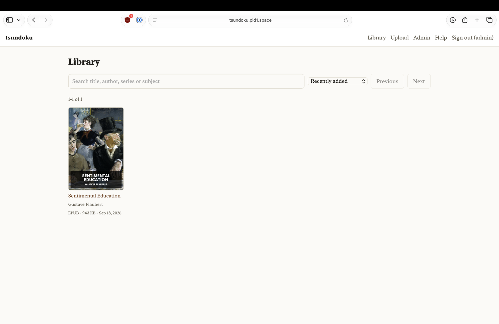
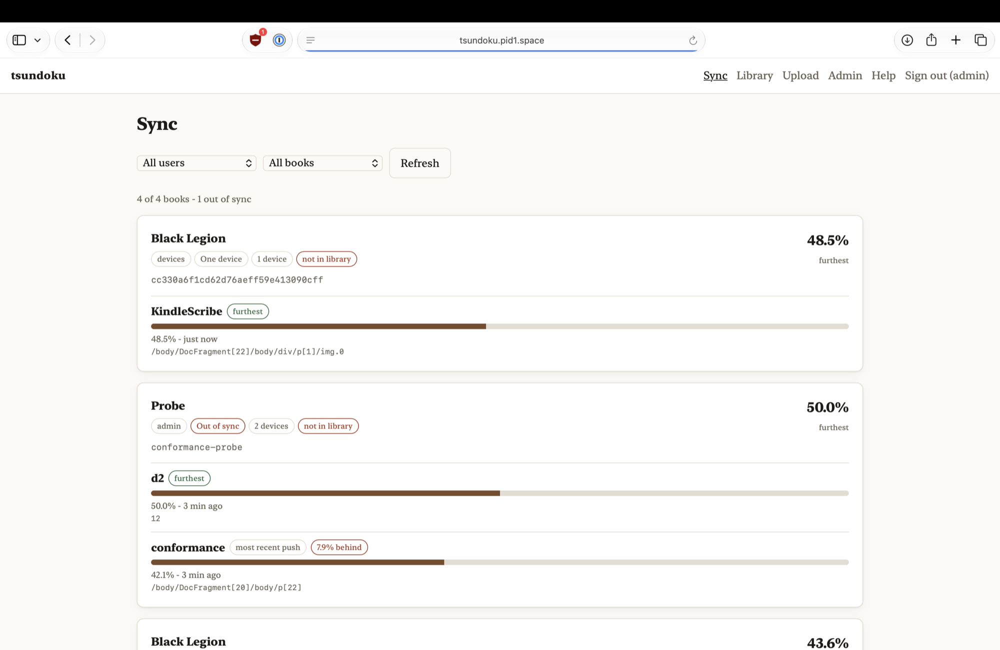
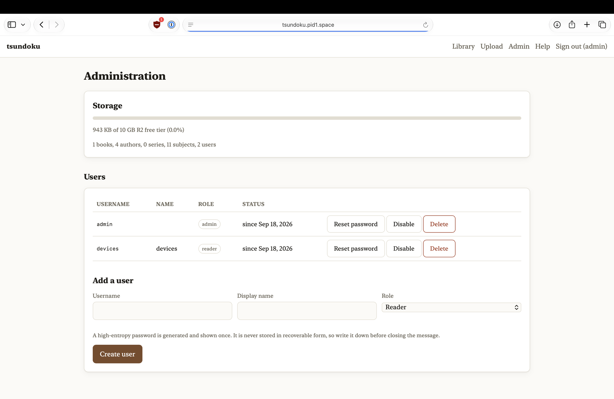

積ん読
tsundoku
pronounced tsoon-doh-koo: Japanese for buying books and letting them pile up unread
A home for your ebooks. Upload them once, read them on any e-reader, and pick up on one device where you stopped on another.
It runs on Cloudflare's free tier: one Worker, one R2 bucket and one D1 database. It's built for a household, not the public: every page but the sign-in page needs an account, and an administrator creates the accounts.
From upload to reading
- You drag a book onto the upload page. The title, authors and cover are read out of the file.
- Your e-reader finds it in the catalog and downloads it.
- KOReader saves your place to tsundoku as you read.
- You open the same book on your phone, in the browser, at the same paragraph.
What it does
An OPDS 2.0 catalog
Browse and download from KOReader, CrossPoint, Thorium and any other reader that speaks OPDS 2.0. Covers and metadata come along.
Upload once
Metadata and covers are read out of EPUB and CBZ files on upload, without downloading them. Files over 95 MB go up in parts automatically.
Sync reading positions
KOReader's own kosync protocol, so its Progress sync plugin needs only the base address. The Sync page shows every device's position on every book, and whether they agree.
Read in the browser
EPUB, CBZ, MOBI, AZW3 and FB2 open in the browser, and EPUB and CBZ positions sync with KOReader. Opening a book never overwrites your e-reader's place; only turning a page saves.
Your reading settings
The publisher's fonts or Atkinson Hyperlegible Next, saved to your account. Light or dark, text size, spacing, line length up to full width, one or two columns, margins and the status bar, set for each device from the Aa button or on Preferences with a live preview.
Safe with untrusted books
A book's own scripts never run, so an EPUB from anywhere can't act as you. Roughly 2,000–5,000 EPUBs fit before the free tier runs out.
Screenshots



Install
You need Node 24 with npm 11.10 or later, and a Cloudflare account.
git clone https://github.com/pid1/tsundoku && cd tsundoku
npm install
npx wrangler login
./scripts/setup.sh # bucket, database, migrations, secrets, admin password
npm run deploy
The setup script is safe to run again. It prints the admin password at the end: write it down, because
changing the ADMIN_PASSWORD secret later does not change it.
Doing it by hand instead
npx wrangler r2 bucket create tsundoku
npx wrangler d1 create tsundoku # put the uuid in wrangler.toml as database_id
npx wrangler d1 migrations apply tsundoku --remote
openssl rand -base64 32 | npx wrangler secret put PEPPER
openssl rand -base64 32 | npx wrangler secret put SESSION_KEY
npx wrangler secret put ADMIN_USERNAME
npx wrangler secret put ADMIN_PASSWORD
npm run deploy
Then give it a custom domain: uncomment the [[routes]] block in wrangler.toml.
Some OPDS readers dislike workers.dev addresses, and sign-in is HTTP Basic, so it must be
served over TLS. The README also has a
prompt you can hand to an AI agent to deploy it for you.
Connect a reader
| Reader | Where | Address |
|---|---|---|
| KOReader, catalog | Search → OPDS catalog → + | https://books.example.com/opds/2.0 |
| KOReader, progress sync | Tools → More tools → Progress sync → Custom sync server | https://books.example.com, the base address with no path |
| CrossPoint, Thorium, any OPDS 2.0 reader | Add an OPDS catalog | https://books.example.com/opds/2.0 |
The catalog is OPDS 2.0 only; readers that only speak the older OPDS 1.2 can't use it. Sign in with the
same account on every device, the web reader included: positions are kept per account. Download a book to
each device from the catalog rather than sideloading a copy from elsewhere, because two copies of a book
rarely hash the same and each would keep its own position. The running server has these instructions at
/help.html.
Free tier
| Limit | Free plan | What it means here |
|---|---|---|
| R2 storage | 10 GB-month | The first ceiling. Roughly 2,000–5,000 EPUBs, or about 80 comics. |
| Worker requests | 100,000 / day | Plenty for a household. The UI is static assets, which are free and unmetered. |
| Worker CPU | 10 ms / invocation | Shaped how passwords are stored. |
| Request body | 100 MB | Files over 95 MB upload in parts automatically. |
| R2 egress | Free | Why this is on R2 and not S3. |
| D1 | 5 GB, 5M row reads/day | Nowhere near it. |
Figures read from Cloudflare's documentation on 2026-09-18. Check them again before relying on them.
Design principles
- Free to run. A household's library fits the free tier, and the free-tier arithmetic is written down in PLAN.md.
- Readers' own protocols. OPDS and kosync, so the reader you already use works without a plugin.
- No build step. TypeScript that wrangler bundles, and a UI of plain ES modules. No framework, no bundler.
- Closed by default. No public catalog, no self-signup, and no DRM or lending.
- The pipeline shapes, renderers display. The OPDS 2.0 catalog and the web UI are two renderings of one query.
- Trade-offs written down. Where the free tier forced a choice, like how passwords are stored, docs/security.md says what was traded and why.